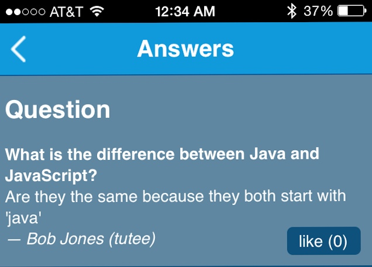
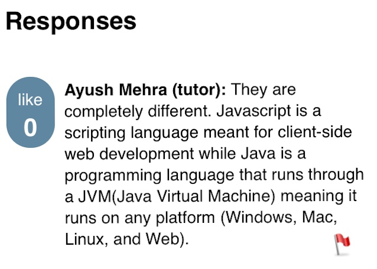
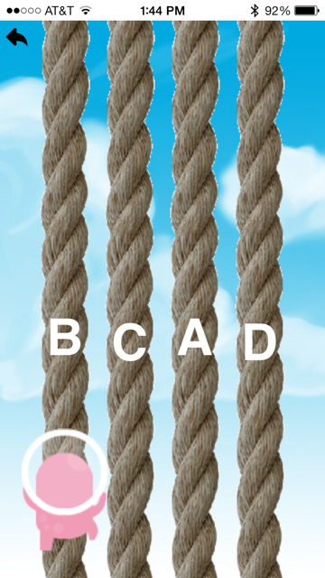
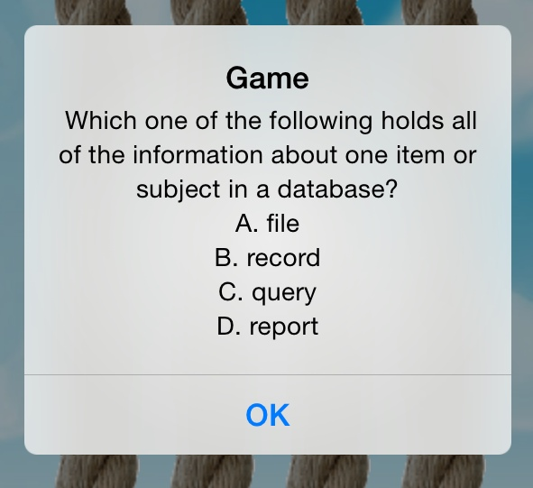
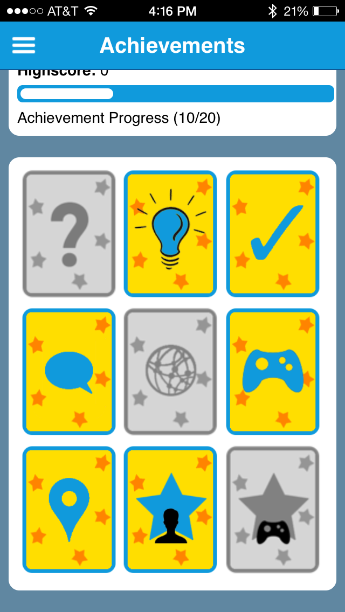
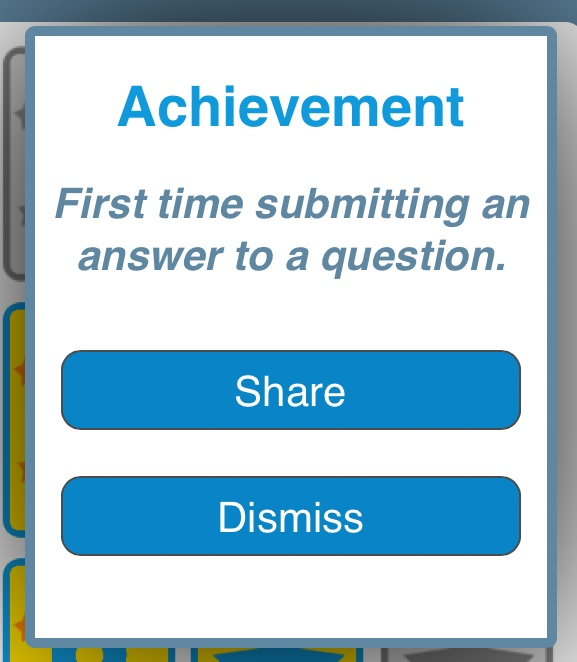
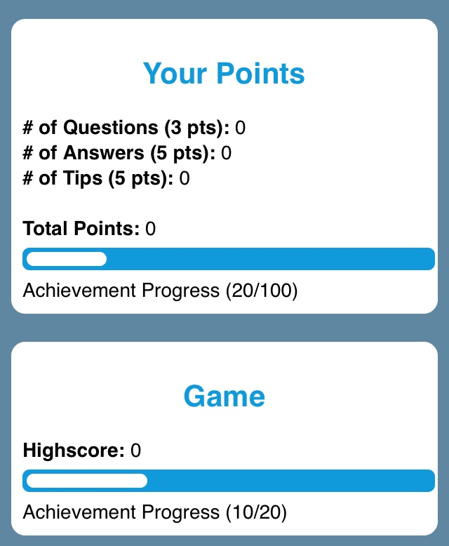

The Discussion page features the most recent questions and tips posted by users, identifiable through three icons:
- Un-answered question
- Tip
- Answered question
Post Page
When a post is tapped on, it is opened up in a new page with the post, submitter's name, and their expertise level all in the top section.

You can also show your appreciation for the post by 'liking' it.
Below, you will see all the answers/comments, which can also be 'liked'.

'Learnin the Ropes' features a small pink character that you move to different labeled ropes to answer multiple choice questions.

The questions are presented through popup boxes:

To answer the question, click on the correct rope which are randomly labeled A-D. You must be quick and also avoid the asteroids for maximum points!
There are numerous different achievements that you can obtain! They are all detailed on the Achievements page.

To find out more about each achievement, tap on its icon. If the achievement has been obtained, you can share it. Until then, it is grayed out.

There are two ongoing achievements as well. General points and game high-score. The progress for these is shown in two horizontal progress bars.

These correspond to the two most impressive achievements in the app (the last two in the grid).
This app was developed by the Homestead High School for the National FBLA Mobile Application Development Competition.
We would love to hear your comments/feedback and will be happy to answer any questions!
Shoot us an email